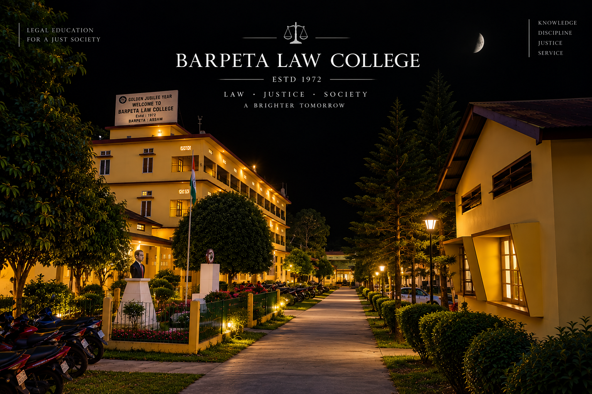

Barpeta Law College
Barpeta Law College is situated at Barpeta Town in the District of Barpeta, Assam. Established in 1972, it is the one and only premier Law College of the district and has been dedicated to the advancement of legal education for more than five decades. Over the years, the College has continued its endeavour to provide meaningful and accessible legal education while fostering academic discipline, professional responsibility and an understanding of the principles of law, justice and society.
The College seeks to create an academic environment where students can develop legal knowledge, analytical thinking and a strong sense of social responsibility. Through classroom learning, practical exposure and activities related to advocacy and legal awareness, Barpeta Law College aims to prepare students not only for careers in the legal profession but also to contribute responsibly to the administration of justice and the wider community.
Currently, the College offers the 3 Years LL.B Degree and the 5 Years B.A., LL.B (Hons) Degree, providing students with structured pathways to pursue legal education and develop the knowledge and skills required for the evolving field of law.
Twenty bighas dedicated to legal education.
The College has its own campus on a plot of 20 Bighas of land, with the Principal’s Room, Teachers’ Common Room, Administrative Block, classrooms, Library-cum-Reading Room and common rooms for both boys and girls. The campus also includes the Ramcharan Medhi Memorial Hall, Moot Court Hall, Legal Aid Cell, Computer Laboratory and other facilities supporting academic and institutional life.